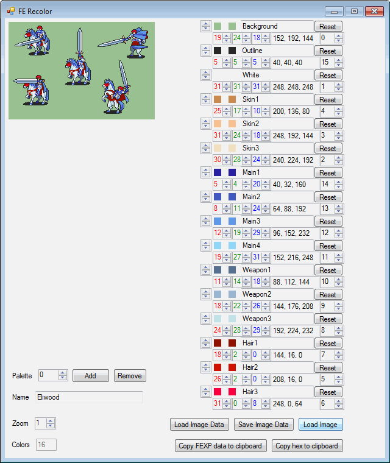
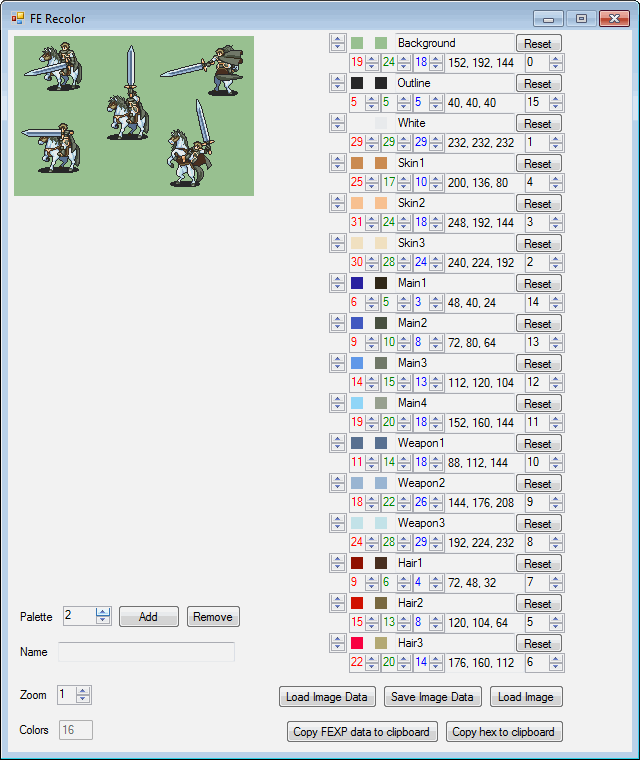
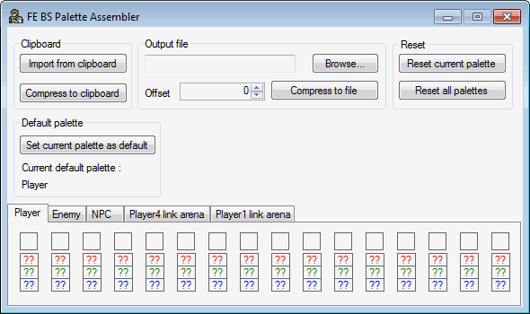
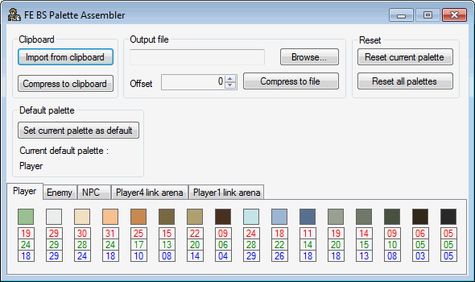
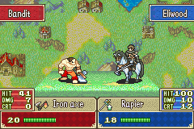
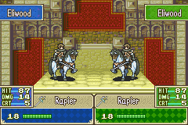
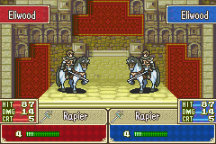
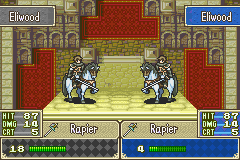

If you want to skip the introduction and go directly to the actual tutorial, click here.
FE BSPalette Assembler is a ROM hacking tool that is meant to be used with BwdYeti's FE Recolor.
It was created to make battle sprite palette editing easier, especially for editing enemy and NPC palettes.
It allows you to put together your different alegiance palettes into one single compressed palette.
You will need .NET 4.0 or higher (Windows).
I haven't tested FE BSPalette Assembler nor FE Recolor on any other OS, so I don't know if it will work.
First of all, open FE Recolor, load the image you want to edit.
In my case, this is the Knight Lord :

Then, edit it :

As you can see, I used
I strongly recommend you use it as it'll save you valuable time.
Now, it's time to and to start using FE BSPalette Assembler.
This is how it looks when you launch it:

Now, click and :

Please note that you can't edit the colors since that's FE Recolor's job.
Now, you have 2 choices:
Let's see how it looks in game :



